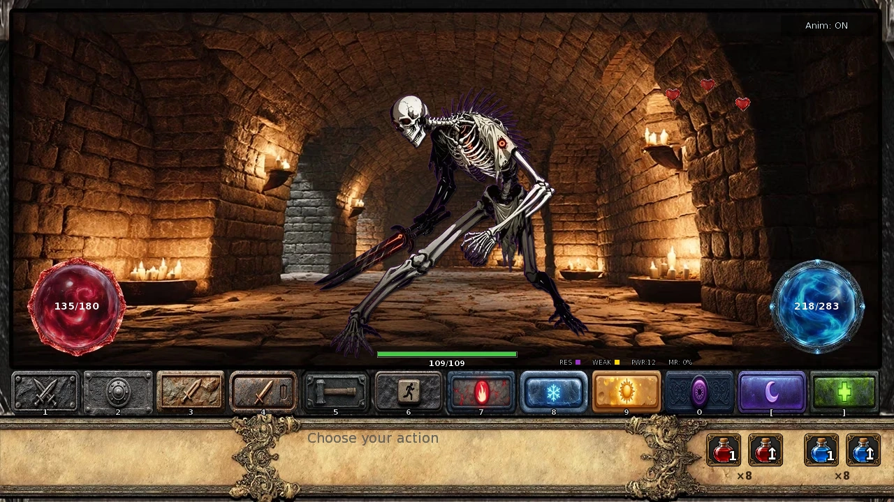
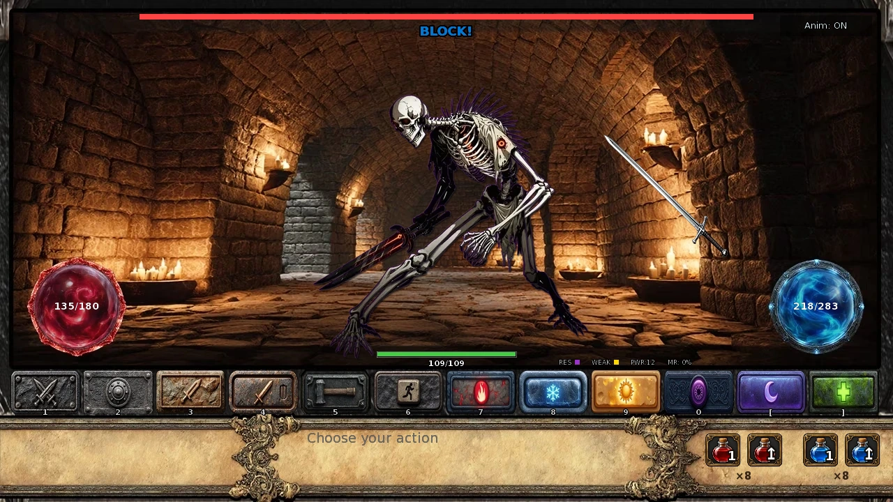
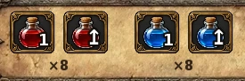

Select a screenshot to enlarge it. Screens show example inventories and progress.
Ordinary combat combines turn-based choices with occasional timed blocks. Build around the attacks you actually use, keep recovery supplies available, and read warnings before committing to another attack.
- Equip your weapon, armor, and grimoire before a fight.
- Choose an action you have learned and can afford.
- Distinguish damage reduction from a successful timed block.
- Use the Medicine and Energy controls before running out of options.
This page covers the normal battle interface. Dungeon exploration, choice-based guardian encounters, and tower defense have their own rules. Important story battles can also impose their own objectives and defenses.
Prepare for the first fight
- Open your equipment and check the melee weapon, armor, and grimoire slots. Weapons support physical damage; armor reduces incoming direct damage; grimoires improve spells and healing.
- Restore Health and Energy and carry Medicine and Energy items. Knowing a skill does not pay its Energy cost.
- When battle begins, read the encounter message. Ordinary battles start with your turn; Ability improves physical accuracy and Quick Attack damage, rather than providing a general speed-based turn order.
- Choose an action, read its result, then respond to the enemy. A miss can still use the turn. Repeated clicks while messages are displayed can advance those messages; they are not a promise of extra attacks.
Combat Scanner adds enemy information such as Health, force field, elemental strengths and weaknesses, and power information. Status icons and the battle message explain why a familiar tactic may be failing.

Actions, skills, and Energy
| Action | Energy | Main scaling / requirement |
|---|---|---|
| Attack | 0 | Strength; always available when normal actions are allowed. |
| Quick Attack | 5 | Ability; no learned attack skill required. |
| Stormslash | 15 | Strength + Ability; learn Stormslash. |
| Power Strike | 20 | Strength; learn Power Strike. |
| Defend | 0 | Fighting tier improves its protection. |
| Fire / Ice Magic | 12 | Mystic; learn Elemental Blast. |
| Light / Dark Magic | 40 | Mystic; learn the matching Light Magic or Dark Magic skill. |
| Sleep Magic | 18 | Learn Illusion Weaving; success uses separate Sleep rules. |
| Heal Magic | 22 | Mystic; learn Healing Touch. |
Endurance Training reduces the physical costs to 4 / 13 / 18 for Quick Attack / Stormslash / Power Strike. Spell costs use their own reductions:
| Spell | Base | Mana Channeling | Inner Peace | Both |
|---|---|---|---|---|
| Fire / Ice | 12 | 6 | 10 | 5 |
| Light / Dark | 40 | 20 | 36 | 18 |
| Sleep | 18 | 9 | 16 | 8 |
| Heal | 22 | 11 | 19 | 9 |
Mana Channeling halves first, rounding up; Inner Peace then removes 10%, rounding down. A triggered Arcane Surge spends 1.5 times the resulting cost, rounded down. Offensive spells can still be dodged or absorbed after Energy is spent.
Stats, equipment, and Fighting Experience
Strength favors Attack and Power Strike. Ability favors Quick Attack and physical accuracy; Stormslash uses both. Mystic supports spell damage, healing, and ordinary Sleep success. Higher Stamina helps your Energy capacity. Your Fighting Experience tier separately improves damage scaling, active defense, status resistance, and a flat incoming-damage reduction.
Show Fighting Experience and equipment calculations
The fighting multiplier is 1 + 0.05 × (tier − 1). Tier 1 is ×1.00, tier 10 is ×1.45, and tier 18 is ×1.85. Tier 18 begins at 8,192,000 Fighting XP as Apex (1); further Apex thresholds grow by ×1.5 and the tier continues increasing. There is no ×1.80 ceiling.
A melee weapon contributes twice its effective level to physical damage, or three times with Weapon Mastery, and its level also improves the variable physical scaling roll. Applicable key items and permanent training can raise the effective level without changing the stored level printed on the weapon.
Armor uses an effective level that includes Pain Tolerance, forge pauldrons, and applicable defensive key items. Its ordinary flat reduction is floor(level × (0.89 × level + 1.11)): effective armor 1 / 5 / 10 removes 2 / 27 / 100 damage before later defenses. Some enemy attacks can partly break through this armor reduction.
Forge pieces are passive key items. Gemmed pieces each add one effective armor level; Chronium pieces each add two. Pauldrons retain their separate armor-level bonus of 1 / 2 / 3 at Iron / Silver / Mithril or higher. Upgrading all four Gemmed pieces to Chronium therefore adds four more effective armor levels overall. See the forge guide for the material costs.
Physical attacks: accuracy, damage, and upgrades
The ordinary physical miss threshold is max(1, 43.3 − 0.414 × Ability)%; Swordplay halves it. The actual test uses a whole-number roll, so a fractional threshold does not guarantee a minimum 1% miss after all modifiers. An enemy can then have its own dodge check. Sniper’s Scope has a 15% chance to correct eligible misses or enemy dodges.
Physical damage varies with fighting tier, effective weapon level, the action’s stat contribution, and the final damage roll. Martial Arts raises that final roll’s lower end from roughly one-third to one-half of its maximum. Enemy percentage reduction, a random floor-based flat defense, and any active guard can reduce the result; a high raw damage figure does not mean every hit removes that much Health.
Show physical skill upgrades and their chances
| Upgrade | Effect |
|---|---|
| Tempest Strike | Stormslash gains 5% damage, uses lightning weakness/resistance, and can chain extra lightning hits. Continuation begins at 50% and falls by five percentage points after each success. |
| Skull Crusher | Power Strike gains 10% damage, then has a 30% chance to multiply that damage by four. |
| Sovereign Edge | Attack gains 15%; independent chances give 20% guard-piercing precision with a further 50% damage bonus, and 5% for a ×10 mortal blow. A separate 15% instant-kill check applies only to eligible ordinary enemies; protected enemies, bosses, and forced fights are excluded. |
| Disarming Technique | Quick Attack, or Attack with Sovereign Edge, can disarm at 10%. Disarm halves the next covered damaging enemy action, including its multi-hit damage, then is consumed. |
| Acrobatics | Quick Attack has a 15% chance of ×1.5 damage. Separately, physical actions can generate a free follow-up Quick Attack at 15%. |
| Adrenaline Rush / Berserker Rage | Adrenaline doubles the physical maximum below 30% Health. Berserker can force Power Strike’s maximum at 90%+ Health: 35% chance, costing a random 3–10% of maximum Health. |
Exploit Weakness has a 15% damage-doubling chance, followed by four skipped eligible physical calculations. Additional strikes can have their own calculations. Power gives ×1.5 physical damage in ordinary combat. Skill-specific bursts, follow-ups, and enemy critical hits are separate effects.
The matching Specialist path adds its rank multiplier to supported attacks. Sword Stone adds its level to Attack/Quick Attack; Brute Stone to Stormslash/Power Strike; Phantom Stone adds its level to Assassin’s extra chained Quick Attacks.
Magic, elements, and healing
Build spell damage and healing with Mystic, a better grimoire, and learned magic skills. Read the enemy’s response before repeating an element: resistance and absorption require different choices.
Show spell and grimoire calculations
Fire/Ice start from 15 + floor(Mystic ÷ 2 × fighting multiplier); Light/Dark use 15 + floor(Mystic × 1.5 × fighting multiplier), before grimoire and other bonuses. Offensive spells gain another point per full ten Mystic above 100. A grimoire is helpful, but the normal spell buttons require the learned skill and enough Energy rather than a mandatory equipped book.
A grimoire adds a variable bonus based on its squared level; Arcane Knowledge triples that contribution. Levels above 1 also add 10% per extra level to the spell’s maximum. Wizardry raises the final minimum roll from 33% to 55%; Master Wizard increases the maximum by 50%.
Ordinary elemental weakness doubles damage and resistance halves it. Separate magic resistance can reduce it further; absorption can heal the enemy. Try another element or physical attack when the battle message reports absorption. Connected Fire damage also suppresses eligible passive regeneration for that enemy turn.
Show advanced spell effects and defense bypasses
Arcane Surge has an 18% chance to turn an offensive spell into triple rolled damage plus 1–300, bypassing elemental resistance and absorption; it uses the higher Energy cost above. It does not automatically erase every floor defense, guard, force field, or special encounter rule. Sashina’s Gift has a separate 15% chance on Fire/Ice to double the maximum, weaken ordinary percentage defense, and prevent absorption for that cast.
Elemental Stone adds its level to Fire/Ice; Twilight Stone to Light/Dark. Alignment can improve the matching Light or Dark spell. Vampire Fangs and Vampire Grimoire offer optional defense-bypassing procs: 15% normally, 18% with Vampirism, with an additional Vampire-stat-based damage roll. They still do not guarantee a hit through every special defense or force field.
Heal Magic scales from 5 + Mystic × fighting multiplier, with grimoire, magic-skill, random-roll, and Sorcerer bonuses. It never exceeds maximum Health. A triggered Sacred Mending doubles healing at 30%; if it actually restores Health, it also cleanses one status. Its cleanse priority is Poison, Web, Sleep, Charm, Disorient, Covered Ears, then Petrify.
Sleep, Drowsy, and charged attacks
Sleep Magic is a control spell, not direct damage. Against ordinary enemies, Mystic and Inner Peace improve its chance while depth adds resistance. The normal cap is 70%, or 75% with Hypnotic Gaze; Sleep Spores add seven percentage points. Bosses instead begin at 13%, with seven more each for Hypnotic Gaze and Sleep Spores. Important scripted opponents can be immune.
A successful Sleep cancels a pending charged attack and guarantees one skipped enemy phase, or two with Master Wizard. Sleep Spores have a 10% chance to add one guaranteed phase. Afterward the enemy has a 65% chance to wake each phase. Successful Sleep also imposes a temporary 20-point repeat-cast penalty that recovers by one point per round.
A failed but connecting Sleep cast can instead cause Drowsy: base 60% chance, increased by seven points per owned Hypnotic Gaze/Sleep Spores. Drowsy reduces each connecting hit by a random 10–50%; each of those items raises both ends by five points. If it caught an already warned attack, that action receives an extra 25-point reduction, including its individual hits. The warning remains; Drowsy weakens it rather than canceling it.
Drowsy guarantees one phase, two with Master Wizard, with Sleep Spores’ separate possible extra phase; afterward recovery is 65% per phase. Eligible enemies waking from successful Sleep also remain Drowsy for their first awake phase. Effects refresh rather than stack, and special story encounters have exceptions.
Defend, forge equipment, and timed blocks
Defend reduces the next applicable direct hit by min(80%, 50% × fighting multiplier). In an ordinary multi-hit attack, it applies only to the opening hit when that hit lands. It is not an 80% reduction to the entire barrage. Nature’s Embrace also restores a random 4–10% of maximum Energy when you Defend.
| Tier | Shield: timed target | Shield: automatic damage reduction | Helmet: critical damage reduction |
|---|---|---|---|
| Iron | +10 pixels; +0.1 seconds | 6% chance to reduce the hit by 3–7% | 10% |
| Silver | +20 pixels; +0.2 seconds | 12% chance to reduce the hit by 6–14% | 20% |
| Mithril / Gemmed / Chronium | +30 pixels; +0.3 seconds | 18% chance to reduce the hit by 9–21% | 30% |
Helmet protection changes damage when a critical occurs. The ordinary enemy direct-hit critical roll starts at 10%, with enemy-specific additions; a critical normally multiplies damage by 1.5 and may add a flat bonus. The helmet does not lower that chance. Gauntlets lower the low end of enemy base damage rolls by 1 / 2 / 3 at Iron / Silver / Mithril or higher.
- Read an enemy’s charge-up warning; its next enemy phase can release the attack.
- When the game says to block an incoming attack, click the attack image before it disappears. Each successful click blocks that hit completely.
- Keep watching through the whole sequence: a multi-hit move can require several separate blocks. Clicking one image does not block all later hits.
The normal target is 180 pixels wide. Enemy timing traits shorten the base window first, with a 0.35-second floor; the shield’s time is added afterward, then difficulty scales the result, with the final 0.35-second floor retained. Thus a shield still adds reaction time against a fast enemy.
Other defenses have their own coverage: Defensive Stance passively reduces landed physical damage by up to 10%; Combat Reflexes and Precognition supply eligible dodge chances; Inner Peace can deflect eligible magic; Iron Constitution reduces covered final direct damage by 10%. None should be assumed to cover every poison tick, percentage attack, or scripted minimum-damage effect.

Force fields, guards, and damage exceptions
Your Force Field refreshes at battle start with capacity equal to 5% of maximum Health per item level. If any field remains when a covered hit lands, it absorbs that entire hit without overflow into Health, even if the hit destroys the field. A following hit can then hurt you.
An enemy force field also absorbs damage without overflow. If it was active when your action began, that whole player action is protected: breaking the field does not let later strikes in the same chain damage enemy Health. Attack again on the next turn. Sword Chain improves eligible physical damage against an active enemy field by 20%.
Ordinary enemy guard skills protect three damaging hits: Defensive Stance reduces physical and magic damage by 30%; Magical Shield reduces physical by 20% and magic by 40%. Chained hits can consume several charges.
Percentage-of-maximum-Health attacks bypass ordinary armor, active Defend, tier defense, and the normal direct-hit reduction sequence. They still use their own difficulty scaling, can be affected by applicable Drowsy/Disarm, and normally meet an active force field. Certain explicitly scripted late-story attacks pierce the field or retain a minimum Health loss; follow the warning and objective shown for that fight.
Status effects: choose an action that still works
| Status | Effect / response | Resistance stat |
|---|---|---|
| Poison | Deals damage each round for its duration; normal actions remain available. | Strength |
| Web | Blocks physical attacks and fleeing. Defend and magic remain options. | Ability |
| Disorient | Blocks Quick Attack, advanced physical moves, and magic. Use Attack, Defend, or an allowed escape. | Perception |
| Sleep / Charm / Covered Ears / Petrify | Stops normal combat actions while active. Recovery buttons are a separate control; see below. | Stamina / Charm / Perception / Stamina |
Resistance uses the relevant base attribute and fighting multiplier, normally capped at 90%. Weaker/stronger versions change resistance or duration. Iron Will adds a separate 25% mental resistance check; Combat Reflexes can avoid Web at 30%; Iron Constitution can resist Poison at 30%; Music Production protects against Covered Ears. Some boss skills can override resistance.
Sleep and Web have recovery checks after their first affected phase; other conditions count down according to the incoming skill. Battle statuses are cleared when a fresh ordinary battle starts. Recovery restores your meters; it does not automatically cleanse a status.
Difficulty and Infinity traits
| Value | Easy | Normal | Hard |
|---|---|---|---|
| Enemy Health / ordinary direct damage / healing | ×0.50 | ×1 | ×1.25 |
| Percentage-Health damage | ×0.50 | ×1 | ×1.10 |
| Poison damage | ×0.50 | ×1 | ×1.20 |
| Reaction window | ×1.50 | ×1 | ×0.90 |
Difficulty does not universally multiply every exploration trap or change the rewards. Minimum positive damage and reaction-time floors still apply.
In Infinity Dungeons, traits change the fight as well as its appearance. Tiny favors dodging; Huge raises Health and damage; Shadow changes elemental behavior and adds dodge; Ghostly raises dodge, general reduction, and magic resistance. Angry raises damage, Crazy raises critical chance and its flat bonus, Mystical raises magic resistance, Fierce raises general reduction, and Calm adds regeneration. Chaotic can copy another trait’s mechanics. Multiple traits and the enemy’s own skills can combine.
Supported Luck Potion rolls include the low end of enemy barrage counts and chain continuation; eligible retries have a 25% opportunity to keep a better roll. At most one failed continuation can be rescued in each supported chain. Luck is not a universal guarantee against every miss, critical, or status.
Recovery, escape, defeat, and rewards
The bottom-right Medicine and Energy item controls each have a 1 button and an ↑ refill button. One item restores 25 of its meter, or 50 after Willow’s Enhanced Healing. Refill uses as many stored items as needed to reach maximum, limited by stock; the final item can partly overflow. These controls do not spend a combat turn. Their availability depends on stock and a depleted meter, independently of the normal-action status restrictions.
Battle Meditation restores 5 Health and 5 Energy each round while you are alive. Potion benefits depend on activity: Power gives the ordinary physical bonus above; Shield’s 20% protection belongs to choice-based guardian encounters. Check the relevant activity’s rules when preparing consumables.
Normal fleeing begins at 50 + Ability ÷ 2 + Fighting XP ÷ 10 percent, capped at 95%; Fleet Footed multiplies the chance by 1.5 before the cap. Shadow Step guarantees escape where that guarantee applies. Most normal bosses and forced encounters prevent fleeing; designated repeatable bounties allow it. Infinity forced battles instead allow a desperate 3% chance. Other Infinity escapes face an independent 18% failure check, including Shadow Step.
After unlocking Pixie’s Promise, its daily rescue restores full Health in eligible combat. A qualifying defeat can then consume an enabled Phoenix Feather if no earlier rescue saves you, restoring Health, Energy, and Calm completely. Feather rescue covers ordinary dungeon/Infinity combat and the eligible late-story siege, with exceptions for narrative encounters.
Helmet of Immortality catches a covered lethal hit only when you have more than 10 Health, the finalized damage is at least 250, no force field already protects the hit, and its ten-turn cooldown is ready. It leaves 1 Health; it is not protection against every fatal chip or poison effect.
If defeat reaches the normal fainting recovery, you return to your bedroom with Health, Energy, Calm, and Satiation set to half their maxima; the active dungeon run is abandoned and 24 hours of base time passes. Long-term dungeon progression is retained. Keep a manual save before a difficult excursion.
Victory grants Fighting Experience and Wealth, with possible drops and applicable faction rewards. Gladiator Belt gives +50% Fighting XP; Infinity doubles ordinary XP and Wealth before relevant bonuses. Specialist action points are a separate progression system, explained in the Specialist guide.

Choose your next improvement
If attacks miss, improve Ability and Swordplay. If hits connect but barely hurt, check enemy defenses, equipment, elements, and the matching Specialist path. If barrages defeat you, learn the timed block and improve armor and shield support. If buttons are unavailable, read the status and Energy requirements before changing your build.
普通战斗以回合选择为主，部分攻击还需要限时点击格挡。先围绕自己常用的招式准备装备与技能，备好恢复品；敌人开始蓄力时，先读提示，再决定是否继续进攻。
本页说明普通战斗界面。地下城探索、选择选项推进的守卫遭遇，以及塔防各有独立规则。部分重要剧情战斗也有专属目标与防御机制。
第一次开战前，先检查这几项
- 打开装备，检查近战武器、护甲、魔导书三个栏位。武器支持物理输出，护甲减少直接伤害，魔导书提高法术与治疗效果。
- 恢复生命和精力，携带药品与精力恢复品。学会招式以后，施展时仍要支付精力。
- 进入战斗先读遭遇提示。普通战斗由玩家先行动；能力属性提高物理命中与快速攻击输出，并不统一按速度决定双方行动顺序。
- 选择招式，读完结果，再应对敌人的行动。未命中也可能消耗回合。显示消息时重复点击按钮可能只是在翻过消息，不代表额外发动了攻击。
学会战斗扫描器后，会增加敌方生命、力场、元素强弱与战力等信息。状态图标和战斗消息也能帮助你判断：熟悉的打法为何突然不奏效。
可用招式、学习条件与精力消耗
| 招式 | 精力 | 主要属性／要求 |
|---|---|---|
| 攻击 | 0 | 力量；未被状态限制时可用。 |
| 快速攻击 | 5 | 能力；无需另学对应攻击技能。 |
| 风暴斩 | 15 | 力量＋能力；需学会风暴斩。 |
| 强力打击 | 20 | 力量；需学会强力打击。 |
| 防守 | 0 | 战斗阶级会提高保护效果。 |
| 火／冰魔法 | 12 | 神秘；需学会元素爆破。 |
| 光明／黑暗魔法 | 40 | 神秘；需学会对应的光明魔法或黑暗魔法技能。 |
| 催眠魔法 | 18 | 需学会幻象编织；成功率另按催眠规则计算。 |
| 治疗魔法 | 22 | 神秘；需学会治愈之触。 |
耐力训练使快速攻击、风暴斩、强力打击的费用分别降为4／13／18。法术使用另一套减耗规则：
| 法术 | 基础 | 法力引导 | 内心平静 | 两者都有 |
|---|---|---|---|---|
| 火／冰 | 12 | 6 | 10 | 5 |
| 光明／黑暗 | 40 | 20 | 36 | 18 |
| 催眠 | 18 | 9 | 16 | 8 |
| 治疗 | 22 | 11 | 19 | 9 |
法力引导先将费用减半并向上取整，内心平静再减少 10% 并向下取整。触发奥术涌动时，会消耗减耗后费用的 1.5 倍，向下取整。伤害法术支付费用后，仍可能被闪避或吸收。
属性、装备和战斗经验分别提供什么
力量适合攻击与强力打击；能力支持快速攻击与物理命中，风暴斩同时使用两项属性。神秘支持法术伤害、治疗和普通敌人的催眠成功率。耐力提高精力容量。战斗经验阶级则另外改善输出倍率、主动防守、状态抗性和固定减伤。
展开战斗经验与装备计算
战斗倍率为1＋0.05 ×（阶级－1）。第 1 阶为 ×1.00，第 10 阶为 ×1.45，第 18 阶为 ×1.85。战斗经验达到 8,192,000 时进入第 18 阶 Apex (1)；之后各次 Apex 门槛按前一级的 1.5 倍增长，阶级继续提高，没有 ×1.80 的旧上限。
装备近战武器后，武器提供有效等级两倍的物理伤害加值；有武器精通时为三倍。武器等级也参与物理伤害的浮动倍率。部分关键道具和永久训练会提高有效等级，不一定改动装备上直接显示的等级。
护甲使用包含疼痛耐受、锻造肩甲及其他适用道具的有效等级。普通固定减伤为向下取整［等级 ×（0.89 × 等级＋1.11）］：有效护甲等级为 1／5／10 时，分别先减去 2／27／100 点伤害，再处理后续防御。部分敌方招式能穿透其中一部分护甲减伤。
锻造护甲是提供被动效果的关键道具。每件镶宝石护甲增加 1 个有效护甲等级，时源矿护甲每件增加 2 个。肩甲原有的额外等级仍保留：铁／银／秘银及以上分别为 1／2／3。因此将四件镶宝石护甲全部升为时源矿，共额外增加 4 个有效护甲等级。材料消耗请查铁匠与锻造。
物理进攻：先命中，再考虑伤害
普通物理攻击的未命中阈值为max（1，43.3－0.414 × 能力）%，剑术再将该阈值减半。实际使用整数判定，所以经过所有修正后，不应将小数阈值理解为始终至少有 1% 概率未命中。敌人还可能另外进行闪避判定。狙击镜有 15% 概率补救适用的未命中或敌方闪避。
物理伤害同时受战斗阶级、武器有效等级、招式使用的属性以及最终随机伤害影响。武术将最后一次伤害范围的下限，从约最高值的三分之一提高到二分之一。敌人的百分比减伤、随层数增长的随机固定防御，以及当前防御姿态仍会继续削减伤害。
展开物理强化技能与触发概率
| 技能 | 效果 |
|---|---|
| 暴风打击 | 使风暴斩增加 5% 伤害，并按雷电弱点／抗性结算，还可追加连锁雷击。首次继续概率 50%，每次成功后降低 5 个百分点。 |
| 碎颅击 | 强力打击增加 10% 伤害，再有 30% 概率将这部分伤害乘以 4。 |
| 王权锋刃 | 普通「攻击」增加 15% 伤害；另分别有 20% 概率穿过敌方防御姿态并再加 50% 伤害、5% 概率造成十倍重击。还有独立的 15% 即死判定，仅适用于符合条件的普通敌人，受保护敌人、首领与强制战斗除外。 |
| 缴械技巧 | 快速攻击，或带有王权锋刃的普通攻击，有 10% 概率缴械。缴械使敌人下一次适用的伤害行动减半，包括该行动的多段伤害，之后消耗掉。 |
| 杂技 | 快速攻击有 15% 概率造成 1.5 倍伤害；此外，物理行动还有独立的 15% 概率追加一次免费的快速攻击。 |
| 肾上腺素爆发／狂战士之怒 | 前者在生命低于 30% 时将物理伤害上限翻倍。后者在生命至少 90% 时，对强力打击有 35% 概率直接取最高伤害，并消耗随机 3–10% 的生命上限。 |
利用弱点有 15% 概率使伤害翻倍，触发后跳过接下来四次适用的物理伤害计算。追加攻击也可能各自计算。普通战斗中的力量药水效果使物理伤害乘以 1.5。技能爆发、追加攻击与敌方暴击各自使用对应规则。
对应的专家战斗路线还会提供阶级倍率。剑石按等级增加攻击／快速攻击伤害；蛮力之石增加风暴斩／强力打击伤害；幻影之石增加刺客额外连锁快速攻击的伤害。
魔法、元素与治疗
神秘、魔导书和相关技能共同支持法术输出与治疗。重复使用同一元素前，先读敌人的反应，留意抗性与吸收。
展开法术与魔导书计算
火／冰魔法的起点是15＋向下取整（神秘 ÷ 2 × 战斗倍率）；光明／黑暗魔法则为15＋向下取整（神秘 × 1.5 × 战斗倍率），再加入魔导书与其他加成。伤害法术在神秘超过 100 后，每多完整 10 点再加 1。魔导书能明显加强施法，但普通法术按钮检查的是已学技能和精力，并不强制要求装备一本书。
魔导书提供以等级平方为基础的随机加值；奥术知识将这一贡献乘以 3。等级超过 1 后，每多一级还将法术最高值提高 10%。巫术把最终随机伤害下限从 33% 提到 55%；魔法大师使最高值增加 50%。
普通元素弱点使伤害翻倍，抗性使伤害减半；另外的魔法抗性还可继续减伤，而元素吸收甚至会治疗敌人。看到吸收提示时，可以换元素或改用物理招式。成功结算的火魔法还会阻止适用敌人在该次行动后进行被动再生。
展开进阶法术效果与防御穿透
奥术涌动有 18% 概率使伤害法术变为「随机伤害的三倍，再加 1–300」，绕过元素抗性和吸收，同时支付前述更高精力费用。层数固定防御、防御姿态、力场和特殊遭遇规则仍需分别考虑。Sashina 的恩赐则在火／冰魔法上另有 15% 概率翻倍最高值、削弱普通百分比防御，并阻止该次施法被吸收。
元素之石按等级增加火／冰伤害，暮光之石增加光明／黑暗伤害。阵营倾向可以强化对应的光明或黑暗魔法。吸血鬼獠牙与吸血鬼魔导书还提供可穿透部分防御的触发效果：通常 15%，学会吸血鬼化后为 18%，并追加与吸血鬼属性有关的随机伤害；仍需遵守适用的命中、特殊防御和力场规则。
治疗魔法以「5＋神秘 × 战斗倍率」为基础，加入魔导书、相关技能、随机范围及术士路线加成，恢复不超过生命上限。圣愈之术有 30% 概率使治疗翻倍；实际恢复了生命时，还会清除一种状态，优先顺序为中毒、蛛网、睡眠、魅惑、迷乱、捂耳、石化。
催眠、困倦与蓄力攻击
催眠魔法用于控制，不造成直接伤害。面对普通敌人，神秘与内心平静提高成功率，层数会增加抵抗。通常上限 70%，有催眠凝视时为 75%；沉睡孢子再加 7 个百分点。首领改用 13% 基础概率，催眠凝视与沉睡孢子各加 7 个百分点；部分特殊剧情敌人免疫。
成功催眠会取消正在蓄力的攻击，并保证敌人跳过一次行动；有魔法大师时保证两次。沉睡孢子还有 10% 概率多保证一次。之后每次敌方行动前有 65% 概率醒来。每次成功催眠也会留下暂时的 20 个百分点重复施法惩罚，每轮恢复 1 点。
催眠命中但未成功入睡时，还可能造成困倦（Drowsy）：基础触发概率 60%，催眠凝视、沉睡孢子各加 7 个百分点。困倦使每次实际命中的攻击随机减伤 10–50%；上述两件物品各使范围两端提高 5 点。若困倦施加时敌人已经发出蓄力警告，该次蓄力行动还会额外减伤 25 个百分点，多段攻击的每一段都适用。警告不会被取消，这次攻击会被削弱。
困倦保证持续一次敌方行动，有魔法大师时两次，沉睡孢子也可能另加一次；之后每次有 65% 概率恢复。符合条件的敌人从成功催眠中醒来后，首次清醒行动也会带有困倦。再次施加会刷新效果，不会无限叠加；特殊剧情战斗另有例外。
防守、锻造装备与限时格挡
防守对下一次适用的直接伤害提供min（80%，50% × 战斗倍率）减伤。普通多段攻击中，只在开头一击实际命中时作用于那一击，不会让整套连击都减伤 80%。学会自然之拥后，防守还会随机恢复精力上限的 4–10%。
| 材质 | 盾牌：限时目标 | 盾牌：自动减伤 | 头盔：暴击伤害减免 |
|---|---|---|---|
| 铁 | 目标加大 10 像素；时间 +0.1 秒 | 6% 概率将这次伤害减少 3–7% | 10% |
| 银 | 目标加大 20 像素；时间 +0.2 秒 | 12% 概率将这次伤害减少 6–14% | 20% |
| 秘银／镶宝石／时源矿 | 目标加大 30 像素；时间 +0.3 秒 | 18% 概率将这次伤害减少 9–21% | 30% |
头盔改变的是发生暴击时受到的伤害。普通敌方直接攻击的暴击概率从 10% 起，再加入敌人自身的修正；暴击通常先乘以 1.5，并可能追加固定伤害。头盔不会降低这次暴击的发生概率。护手则降低敌方基础伤害随机范围的下限：铁／银／秘银及以上分别降低 1／2／3。
- 留意敌人蓄力警告；下一次敌方行动可能释放该招。
- 出现「点击来袭攻击进行格挡」提示时，在图像消失前点击攻击图像。成功可完全挡住这一击。
- 继续看完整个过程：多段招式可能需要逐次格挡，点击一次不会替你挡住后续所有攻击。
基础点击目标宽度为 180 像素。敌人的加速特性先缩短基础反应时间，并保留 0.35 秒下限；之后再加盾牌提供的时间，最后套用难度倍率，最终仍保留 0.35 秒下限。因此即使敌人很快，盾牌仍能增加反应余量。
其他防御技能也各有适用范围：防御姿态被动减少实际命中的物理伤害，最多 10%；战斗反射、预知提供对应的闪避机会；内心平静能偏转适用魔法；钢铁体魄对适用的最终直接伤害再减 10%。中毒持续伤害、百分比攻击和特殊最低伤害不应直接套用整套普通减伤规则。
力场、防御姿态与伤害例外
玩家的力场在开战时补满，容量为每级道具对应生命上限的 5%。适用的伤害命中时，只要力场还剩一点，就会吸收整次攻击，不会将超出的伤害转给生命；即使这次打破力场，生命仍不受该击伤害。下一击就可能直接损血。
敌方力场同样没有溢出伤害。若你发动行动时它仍存在，这整次玩家行动都无法伤害敌方生命；中途打破力场，后续连击也不会立即穿过去。下一回合重新进攻即可。剑链使对仍有力场的敌人造成的适用物理伤害增加 20%。
普通敌方防御技能保护接下来三次伤害命中：防御姿态对物理与魔法均减伤 30%；魔法护盾对物理减伤 20%、魔法减伤 40%。一套连击可以消耗多次保护次数。
按生命上限百分比造成伤害的攻击会绕过普通护甲、主动防守、战斗阶级防御及通常的直接减伤过程。它们使用专属难度倍率，仍可能受适用的困倦／缴械影响，通常也会被现存力场挡住。少数剧情攻击会明确穿透力场，或保留最低生命损失，请以该场战斗的警告和目标为准。
中了状态，先找仍可用的招式
| 状态 | 效果与应对 | 抵抗属性 |
|---|---|---|
| 中毒 | 持续期间每轮受伤，普通行动仍可使用。 | 力量 |
| 蛛网 | 无法物理进攻或逃跑；仍可防守、施法。 | 能力 |
| 迷乱 | 无法快速攻击、使用进阶物理招式或魔法；仍可普通攻击、防守，或在允许时逃跑。 | 感知 |
| 睡眠／魅惑／捂耳／石化 | 期间无法正常采取战斗行动；恢复按钮使用独立规则，见下文。 | 耐力／魅力／感知／耐力 |
抵抗判定使用对应基础属性和战斗倍率，通常最高 90%。较弱／较强版本会改变抵抗或持续规则。钢铁意志提供独立的 25% 精神状态抵抗；战斗反射对蛛网有 30% 避免机会；钢铁体魄对中毒有 30% 抵抗机会；音乐制作可防御捂耳效果。部分首领技能可越过抗性。
睡眠与蛛网在最初受影响阶段后会进行恢复判定；其他状态按来袭技能的持续时间倒数。新的普通战斗开始时会清除上一场战斗状态。恢复品补充状态条，不会自动清除异常状态。
难度与无限地下城特性
| 项目 | 简单 | 普通 | 困难 |
|---|---|---|---|
| 敌方生命／普通直接伤害／治疗 | ×0.50 | ×1 | ×1.25 |
| 生命百分比伤害 | ×0.50 | ×1 | ×1.10 |
| 中毒伤害 | ×0.50 | ×1 | ×1.20 |
| 反应时间 | ×1.50 | ×1 | ×0.90 |
难度不会统一改变所有探索陷阱，也不改变奖励。正伤害的最低值与反应时间下限仍保留。
无限地下城特性除了改变外观，也会改变战斗：微小型擅长闪避，巨大型提高生命与伤害；暗影改变元素特性并增加闪避；幽灵提高闪避、一般减伤和魔法抗性。愤怒提高伤害，疯狂提高暴击率与暴击固定加伤，神秘提高魔法抗性，凶猛提高一般减伤，平静增加再生；混沌还能复制另一项特性的机制。多项特性可与敌人的原有技能一起生效。
幸运药水可帮助部分连锁继续判定和敌方随机连击次数判定：适用时有 25% 机会多掷一次并保留较好的结果。每条适用连锁最多挽救一次原本失败的继续判定。它不会保证所有攻击命中，也不能统一消除暴击或异常状态。
恢复、撤退、战败与奖励
右下角的药品与精力恢复品各有「1」和「↑ 补满」按钮。每个恢复 25 点，获得 Willow 的强化治疗后为 50 点。「补满」会按缺口连续使用足量库存，不足时用完可用数量；最后一个可能有部分恢复量溢出。这些按钮不消耗战斗回合，是否可用取决于库存和对应数值是否未满，独立于普通行动的异常状态限制。
战斗冥想在你存活时每轮恢复 5 生命与 5 精力。药水效果也要按活动区分：力量药水提供前述普通物理加成；护盾药水的 20% 防护用于选择选项推进的守卫遭遇。准备消耗品时，查看对应活动的规则。
普通逃跑概率从50＋能力 ÷ 2＋战斗经验 ÷ 10（%）开始，最高 95%；步履轻盈在封顶前乘以 1.5。影步在适用的遭遇中保证逃脱。普通首领与强制战斗多数不能逃，部分指定的重复悬赏允许撤退。无限地下城的强制战斗则有 3% 紧急逃脱机会；其他无限地下城逃跑会先面对独立的 18% 失败判定，影步也适用。
解锁Pixie 的承诺后，符合条件的战斗中每天可获一次救援，回满生命。若没有更早的救援保住你，符合条件的战败还能自动消耗已启用的凤凰羽毛，完全恢复生命、精力与镇定。羽毛适用于普通地下城／无限地下城战斗及符合条件的后期围攻战，叙事式遭遇另有例外。
不朽头盔仅在符合条件的致命伤害结算时触发：当前生命高于 10、最终伤害至少 250 且足以致命、没有力场已挡住该击，并且十回合冷却结束。它让你保留 1 生命，并非所有低额致命伤或毒伤都能靠它保住。
若最终进入普通昏迷恢复，会回到卧室，生命、精力、镇定、饱腹感设为各自上限的一半；当前地下城行程结束，并经过基础 24 小时。长期地下城进度保留。挑战困难行程前，可先留一个手动存档。
获胜会得到战斗经验和财富，并可能掉落物品或获得对应派系声望。角斗士腰带增加 50% 战斗经验；无限地下城先将普通经验与财富翻倍，再处理对应加成。专家路线行动点数是另一套成长，见专家战斗路线。

下一步优先补什么
经常打空时，先看能力与剑术；命中了却伤害很低，检查敌方防御、装备、元素和对应专家路线；总被连击击倒，就练习限时格挡，并补足护甲与盾牌；按钮不可用时，先读状态和精力要求，再决定是否调整成长方向。
Adapted and updated from the community Chronoromancer Wiki. Community source and history · CC BY-SA 4.0. Game images © Chronoromancer Studio.